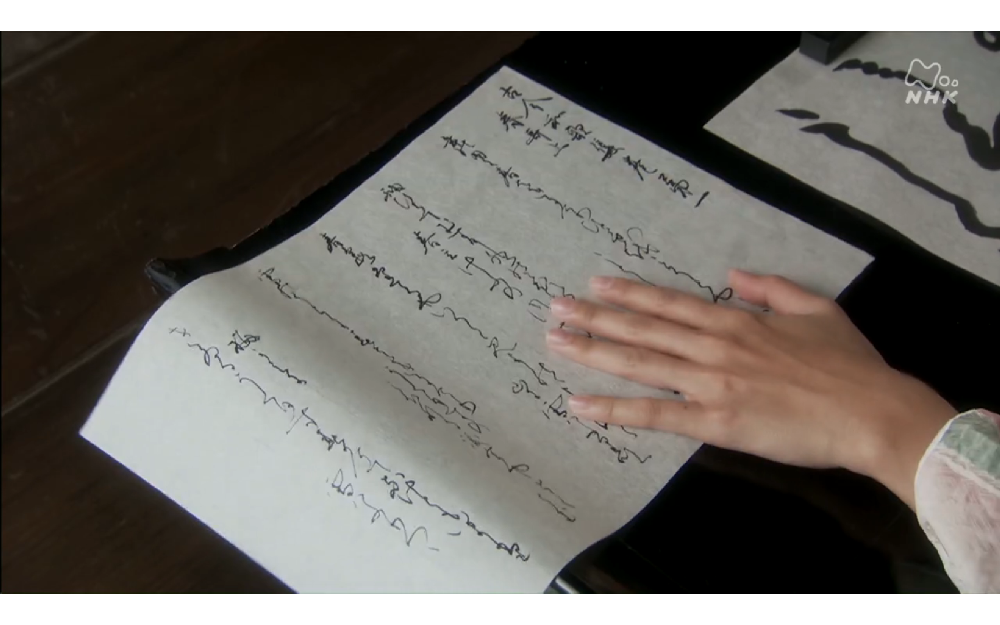
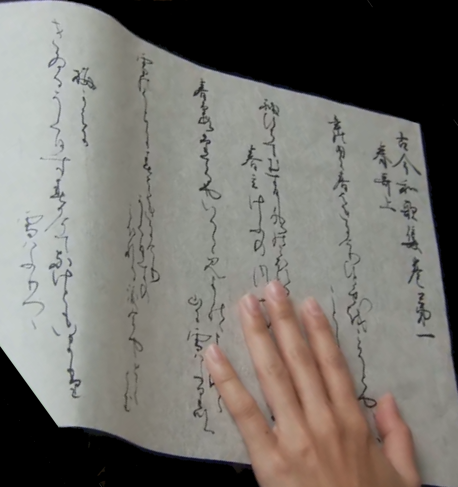

一覽 with WOFF
Unicode 10.0 (もしくは それ以前) に 「變體がな」 入りぬ。 然れば こゝに 記しゆきて text の copy & paste に 用ゐむ。
これらの 文字を 下に 示す (code-point U+1B000 より U+1B11E まで)。
但し その數 多く HTML にて 直に 記すは 煩しければ dynamic に JavaScript にて 記し出ださむ。
表示字型には 特製の WOFF file を 用ゐたり。
これは http://www.unicode.org/charts/ の Kana Supplement (U1B000.pdf) 及び Kana Extended-A (U1B100.pdf) より
MuPDF を 以て 字型 data を
FontForge を以て
この HTML にては CSS の @font-face により これら 變體がな文字を 表したり。
| あ (安) ア (阿) | 𛀂 (安) 𛀃 (愛) 𛀄 (阿) 𛀅 (惡恶悪) |
|---|---|
| い (以) イ (伊) | 𛀆 (以) 𛀇 (伊) 𛀈 (意) 𛀉 (移) |
| う (宇) ウ (宇) | 𛀊 (宇) 𛀋 (宇) 𛀌 (憂) 𛀍 (有) 𛀎 (雲) |
| え (衣) エ (江) | 𛀏 (盈) 𛀐 (緣缘縁) 𛀑 (衣) 𛀒 (衣) 𛀓 (要) |
| お (於) オ (於) | 𛀔 (於扵) 𛀕 (於扵) 𛀖 (隱隠) |
| か (加) カ (加) | 𛀗 (佳) 𛀘 (加) 𛀙 (可) 𛀚 (可) 𛀛 (嘉) 𛀜 (我) 𛀝 (歟欤) 𛀞 (賀) 𛀟 (閑) 𛀠 (香) 𛀡 (駕驾) 𛀢 (家) |
| き (幾) キ (幾) | 𛀣 (㐂喜) 𛀤 (幾) 𛀥 (幾) 𛀦 (支) 𛀧 (木) 𛀨 (祈) 𛀩 (貴贵) 𛀪 (起) 𛀻 (期) |
| く (久) ク (久) | 𛀫 (久) 𛀬 (久) 𛀭 (九) 𛀮 (供) 𛀯 (倶) 𛀰 (具) 𛀱 (求) |
| け (計) ケ (介? 个=箇?) | 𛀲 (介) 𛀳 (介) 𛀴 (希) 𛀵 (氣) 𛀶 (計=计) 𛀷 (遣) 𛀢 (家) |
| こ (己) コ (己) | 𛀸 (古) 𛀹 (故) 𛀺 (許许) 𛀻 (期) 𛂘 (子) |
| さ (左) サ (草? 散?) | 𛀼 (乍) 𛀽 (佐) 𛀾 (佐) 𛀿 (左) 𛁀 (差) 𛁁 (散) 𛁂 (斜) 𛁃 (沙) |
| し (之) シ (之) | 𛁄 (之) 𛁅 (之) 𛁆 (事) 𛁇 (四) 𛁈 (志) 𛁉 (新) |
| す (寸) ス (須) | 𛁊 (受) 𛁋 (壽寿) 𛁌 (數数) 𛁍 (數数) 𛁎 (春) 𛁏 (春) 𛁐 (須=须) 𛁑 (須) |
| せ (世) セ (世) | 𛁒 (世) 𛁓 (世) 𛁔 (世) 𛁕 (勢) 𛁖 (聲) |
| そ (曽=曾) ソ (曽=曾) | 𛁗 (所) 𛁘 (所) 𛁙 (曽曾) 𛁚 (曽曾) 𛁛 (楚) 𛁜 (蘇) 𛁝 (䖏處) |
| た (太) タ (多) | 𛁞 (堂) 𛁟 (多) 𛁠 (多) 𛁡 (當当) |
| ち (知) チ (千) | 𛁢 (千) 𛁣 (地) 𛁤 (智) 𛁥 (知) 𛁦 (知) 𛁧 (致) 𛁨 (遲遅) |
| つ (川) ツ (川? 州?) | 𛁩 (川) 𛁪 (川) 𛁫 (津) 𛁬 (都) 𛁭 (徒) |
| て (天) テ (天) | 𛁮 (亭) 𛁯 (低) 𛁰 (傳传伝) 𛁱 (天) 𛁲 (天) 𛁳 (天) 𛁴 (帝) 𛁵 (弖) 𛁶 (轉转転) 𛂎 (而) |
| と (止) ト (止) | 𛁷 (土) 𛁸 (度) 𛁹 (東东) 𛁺 (登) 𛁻 (登) 𛁼 (砥) 𛁽 (等) 𛁭 (徒) |
| な (奈) ナ (奈) | 𛁾 (南) 𛁿 (名) 𛂀 (奈) 𛂁 (奈) 𛂂 (奈) 𛂃 (菜) 𛂄 (那) 𛂅 (那) 𛂆 (難) |
| に (仁) ニ (二) | 𛂇 (丹) 𛂈 (二) 𛂉 (仁) 𛂊 (兒児) 𛂋 (尓爾) 𛂌 (尓爾) 𛂍 (耳) 𛂎 (而) |
| ぬ (奴) ヌ (奴) | 𛂏 (努) 𛂐 (奴) 𛂑 (怒) |
| ね (袮=禰) ネ (袮=禰) | 𛂒 (年) 𛂓 (年) 𛂔 (年) 𛂕 (根) 𛂖 (熱) 𛂗 (袮禰) 𛂘 (子) |
| の (乃) ノ (乃) | 𛂙 (乃) 𛂚 (濃) 𛂛 (能) 𛂜 (能) 𛂝 (農) |
| は (波) ハ (八) | 𛂞 (八) 𛂟 (半) 𛂠 (婆) 𛂡 (波) 𛂢 (盤) 𛂣 (盤) 𛂤 (破) 𛂥 (者) 𛂦 (者) 𛂧 (葉) 𛂨 (頗) |
| ひ (比) ヒ (比) | 𛂩 (悲) 𛂪 (日) 𛂫 (比) 𛂬 (避) 𛂭 (非) 𛂮 (飛) 𛂯 (飛) |
| ふ (不) フ (不) | 𛂰 (不) 𛂱 (婦) 𛂲 (布) |
| へ (部) ヘ (部) | 𛂳 (倍) 𛂴 (弊) 𛂵 (弊) 𛂶 (遍) 𛂷 (邊) 𛂸 (邊边辺) 𛂹 (部) |
| ほ (保) ホ (保) | 𛂺 (保) 𛂻 (保) 𛂼 (報报) 𛂽 (奉) 𛂾 (寶) 𛂿 (本) 𛃀 (本) 𛃁 (豐豊) |
| ま (末) マ (末) | 𛃂 (万) 𛃃 (末) 𛃄 (末) 𛃅 (滿满満) 𛃆 (滿) 𛃇 (萬) 𛃈 (麻) 𛃖 (馬马) |
| み (美) ミ (三) | 𛃉 (三) 𛃊 (微) 𛃋 (美) 𛃌 (美) 𛃍 (美) 𛃎 (見见) 𛃏 (身) |
| む (武) ム (牟) | 𛃐 (武) 𛃑 (無) 𛃒 (牟) 𛃓 (舞) 𛄝 (无) 𛄞 (无) |
| め (女) メ (女) | 𛃔 (免) 𛃕 (面) 𛃖 (馬马) |
| も (毛) モ (毛) | 𛃗 (母) 𛃘 (毛) 𛃙 (毛) 𛃚 (毛) 𛃛 (茂) 𛃜 (裳) 𛄝 (无) 𛄞 (无) |
| や (也) ヤ (也) | 𛃝 (也) 𛃞 (也) 𛃟 (屋) 𛃠 (耶) 𛃡 (耶) 𛃢 (夜) |
| ゆ (由) ユ (由? 弓?) | 𛃣 (游㳺) 𛃤 (由) 𛃥 (由) 𛃦 (遊逰) |
| よ (与=與) ヨ (與) | 𛃧 (代) 𛃨 (余) 𛃩 (与與) 𛃪 (与) 𛃫 (与) 𛃬 (餘) 𛃢 (夜) |
| ら (良) ラ (良) | 𛃭 (羅) 𛃮 (良) 𛃯 (良) 𛃰 (良) 𛁽 (等) |
| り (利) リ (利) | 𛃱 (利) 𛃲 (利) 𛃳 (李) 𛃴 (梨) 𛃵 (理) 𛃶 (里) 𛃷 (離) |
| る (留) ル (流) | 𛃸 (流) 𛃹 (留) 𛃺 (留) 𛃻 (留) 𛃼 (累纍) 𛃽 (類) |
| れ (礼=禮) レ (礼=禮) | 𛃾 (禮) 𛃿 (礼禮) 𛄀 (連连) 𛄁 (麗) |
| ろ (呂) ロ (呂) | 𛄂 (呂) 𛄃 (呂) 𛄄 (婁娄) 𛄅 (樓楼) 𛄆 (路) 𛄇 (露) |
| わ (和) ワ (???) | 𛄈 (倭) 𛄉 (和) 𛄊 (和) 𛄋 (王) 𛄌 (王) |
| ゐ (為=爲) ヰ (井) | 𛄍 (井) 𛄎 (井) 𛄏 (居) 𛄐 (爲為) 𛄑 (遣) |
| ゑ (恵=惠) ヱ (慧) | 𛄒 (惠) 𛄓 (衞衛) 𛄔 (衞) 𛄕 (衞) |
| を (遠) ヲ (乎) | 𛄖 (乎) 𛄗 (乎) 𛄘 (尾) 𛄙 (緒) 𛄚 (越) 𛄛 (遠) 𛄜 (遠) 𛀅 (惡) |
| ん (无=無) ン (???) | 𛄝 (无無) 𛄞 (无) |
たとへば

さて 電視にて
いざ 上の資料と 照し合せて 讀み解かむ。

|
古今和歌集 卷 第一 春 哥 上 |
"哥" にも "歌" の意 有り。 |
|
年𛂜内𛂌 春𛂦き𛂌𛀳𛃲 ひとゝせ𛄚 こ𛁚とや... こと𛁅... |
としのうちに はるはきにけり ひととせを こそとや(いはむ) ことし(とやいはむ) |
|
袖ひちて むす𛂪𛁅 水𛂜 こ𛃀れ... 春立けふの 風... |
そでひちて むすびしみづの こぼれ(るを) はるたつけふの かぜ(やとくらむ) |
|
春霞 𛁞てる𛃞いつこ 𛃎よ𛁅𛂜ゝ ... 山𛂌 雪ハふ𛃶𛁪ゝ |
はるがすみ たてるやいづこ みよしのの (よしのの) やまに ゆきはふりつつ |
|
雪𛂜うち𛂌 春𛂦き𛂌𛀳𛃲 うく𛂪すの こ𛃀れる涙 今やとく 𛃰む |
ゆきのうちに はるにきにけり うぐひすの こぼれるなみだ いまやとく らむ |
|
梅𛀙𛀒𛂌 きゐるうく𛂪す 春𛀚𛀳て 𛂁けと𛃚い𛃄𛁞 雪ハふりつゝ |
うめかえに きゐるうぐひす はるかけて なけどもいまだ ゆきはふりつつ |
所感
- 上の 古今和歌集の 字は 解り難し。 我 例示を 誤りつ。
- 變體がなを codify するは 古典などの 界隈にては 好ましからめども Unicode 10.0 に於る 實裝にては 數 足らじ。
- 變體がな ならず 既存の 漢字 CJK Unified Ideograph の 草書體の 異體字として codify すべしや。
- されども さやうに 言ひだすに 現代の ひらがなも といふ 話に 陷る。
- 結局のところ あまり 有用とは 言へず。